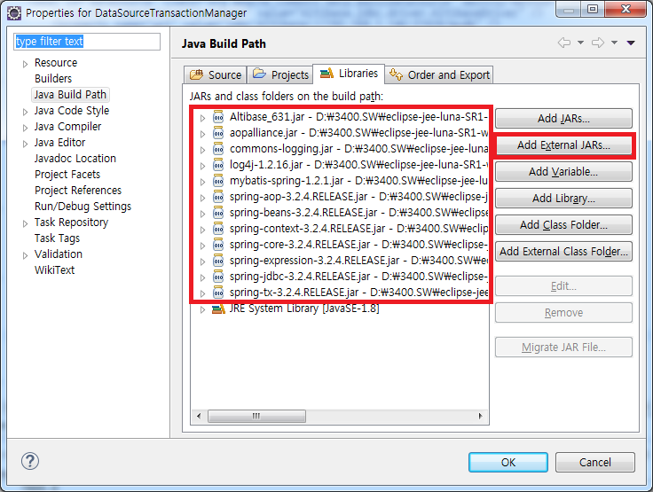
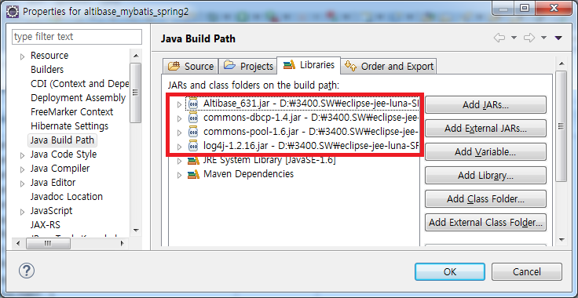
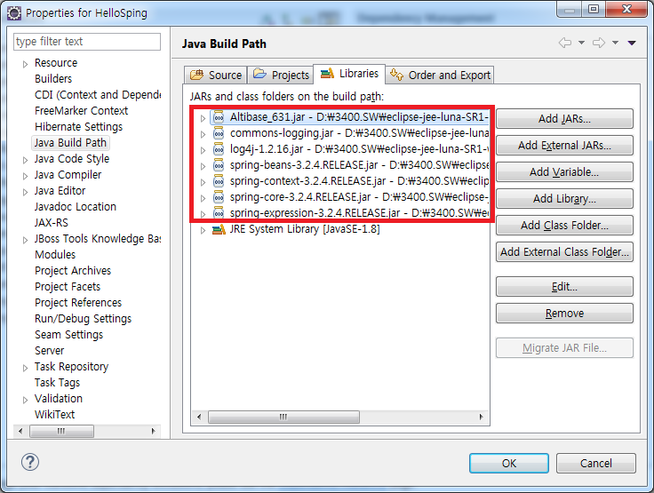

Spring에서 DB와 연동하기 위해서는 bean 설정 파일에 DataSource 관련 bean을 설정해야 한다.
DataSource를 설정하는 방법 중에서 Spring Framework에서 제공하는 DriverManagerDataSource를 이용하는 방법, Jakarta에서 제공하는 DBCP를 이용하는 방법, DB 벤더에서 제공하는 ConnectionPool을 이용하는 방법 등이 있다. 본 장에서는 이 방법들을 이용하여 ATLIBASE와 연동하는 방법에 대해 설명한다.
DriverManagerDataSource 이용
Spring Framework에서 제공하는 DriverManagerDataSource 클래스를 이용하여 DB와 연동할 경우에는 bean 설정파일에서 dataSource bean을 설정할 때 class 속성 값을 org.springframework.jdbc.datasource.DriverManagerDataSource로 지정하면 된다.
이때 dataSource bean에 DB와 연동하기 위한 여러 가지 property들을 정의 할 수 있는데, 다음과 같은 Property들을 ALTIBASE에 맞게 정의하면 된다.
Property |
설명 |
|---|---|
driverClassName |
ALTIBASE JDBC driver class Name |
URL |
ALTIBASE와 연결을 위한 Connection string정보 “jdbc:Altibase://IP:port_no/db_name” 형태로 기입 |
username |
데이터베이스 계정 |
password |
데이터베이스 패스워드 |
다음은 예제로 제공되는 DataManagerDataSourceConnection의 acpplicationContext.xml 파일의 일부이다.
예) DataManagerDataSourceConnection의 applicationContext.xml 파일
… <bean id="dataSource" class="org.springframework.jdbc.datasource.DriverManagerDataSource"> <!-- JDBC Driver 클래스 명 설정 --> <property name="driverClassName" value="Altibase.jdbc.driver.AltibaseDriver" /> < <!-- connection url --> <property name="url" value="jdbc:Altibase://192.168.1.35:21129/mydb" /> <!-- DB 사용자 계정 설정 --> <property name="username" value="sys" /> <!-- DB 사용자 패스워드 설정 --> <property name="password" value="manager" /> </bean> …
예제에 포함된 DataManagerDataSourceConnection 프로젝트를 실행하기 위해서는 Altibase.jar, spring.jar, spring-jdbc.jar, common-loggings.jar 파일이 필요하므로 해당 jar 파일을 추가해주어야 한다.

DBCP를 이용
Spring에서 Jakarta에서 제공하는 DBCP(Jakarta Commons Database Connection Pool) API를 이용하여 ConnectionPool 기반의 DataSource를 설정할 수 있다. 이 때 사용하는 DataSource 클래스는 org.apache.commons.dbcp.BasicDataSource 이다. 설정하는 방법은 위에서 설명한 DriverManagerDataSource 클래스를 이용하는 것처럼 applicationContext.xml 파일에 BasicDataSource 클래스를 사용하여 dataSource bean을 작성하면 된다.
예) DBCPConnection의 applicationContext.xml 파일
… <bean id="dataSource" class="org.apache.commons.dbcp.BasicDataSource"> <!-- JDBC Driver 클래스 명 설정 --> <property name="driverClassName" value="Altibase.jdbc.driver.AltibaseDriver" /> <!-- connection url --> <property name="url" value="jdbc:Altibase://192.168.1.35:21129/mydb" /> <!-- DB 사용자 계정 설정 --> <property name="username" value="sys" /> <!-- DB 사용자 패스워드 설정 --> <property name="password" value="manager" /> </bean> …
BasicDataSource 클래스는 ConnectionPool을 관리하기 위해 다양한 Property들을 제공한다.
Property |
설명 |
|---|---|
driverClassName |
ALTIBASE JDBC driver class Name |
url |
ALTIBASE와 연결을 위한 Connection string정보 jdbc:Altibase://IP:port_no/db_name” 형태로 기입 |
username |
데이터베이스 계정 |
password |
데이터베이스 패스워드 |
maxActive |
최대 Connection 수, 0은 무제한. default는 8 |
initialSize |
초기 Connection 수. default는 0 |
maxIdle |
Pool에 idle하게 유지하는 최대 연결 수. default는 8 |
maxWait |
최대 연결 시도 시간 (단위 : millisec) -1은 무한 대기 |
validationQuery |
연결의 validation을 체크하기 위해 사용하는 SQL문 |
defaultAutoCommit |
autocommit 모드를 설정. default는 true |
defaultTransactionIsolation |
Transaction Isolation level을 설정 |
예제에 포함된 DBCPConnection 프로젝트를 실행하기 위해서는 Spring 설정 library 파일 이외에
Altibase.jar, common-logging.jar, common-dbcp.jar, common-pools.jar 파일이 필요하다.

ALTIBASE의 ConnectionPool을 이용
ALTIBASE에서 제공하는 ABConnectionPoolDataSource 클래스를 사용하면 ALTIBASE의 ConnectionPool을 이용할 수 있다. 위에서 설명한 다른 DataSource처럼 applicationContext.xml에 ABConnectionPoolDataSource 클래스를 이용하여 dataSource bean을 정의하면 된다.
예) AltibaseConnectionPool의 applicationContext.xml 파일
… <bean id="dataSource" class="Altibase.jdbc.driver.AltibaseConnectionPoolDataSource"> <!-- connection URL 대문자 주의 --> <property name="URL" value="jdbc:Altibase://192.168.1.35:21129/mydb"/> <!-- DB 사용자 계정 설정 --> <property name="user" value="sys"/> <!-- DB 사용자 패스워드 설정 --> <property name="password" value="manager" /> </bean> …
ABConnectionPoolDataSource을 이용할 경우 ABConnectionPoolDataSource 내부에서 자동으로 ALTIBASE JDBC Driver class를 로딩하므로 driverClassName property를 지정할 필요가 없다. 또한 DB 사용자 계정을 나타내는 property가 username이 아니고 user임을 주의해야 한다.
ABConnectionPoolDataSource 클래스는 ConnectionPool을 관리하기 위해 다양한 property들을 제공한다.
Property |
설명 |
|---|---|
URL |
ALTIBASE와 연결을 위한 Connection string정보 |
user |
데이터베이스 계정 |
password |
데이터베이스 패스워드 |
maxPoolSize |
최대 Connection 수. 기본값 10. |
minPoolSize |
최소 Connection 수. 기본값 0. |
initialPoolSize |
초기 Connection 수. 기본값 1. |
maxIdleTime |
idle 대기 시간 |
propertyCycle |
ConnectionPool이 다 찼을 때 대기 시간(millisec) |
예제에 포함된 AltibaseConnectionPool 프로젝트를 실행하기 위해서는 Altibase.jar, spring.jar, spring-jdbc.jar, common-logging.jar 파일이 필요하다.

{kind=link}
{kind=link}
{kind=link}
{kind=link}
{kind=link}
{kind=link}
{kind=link}